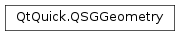

QSGGeometry¶
Synopsis¶
Functions¶
- def
allocate(vertexCount[, indexCount=0]) - def
attributeCount() - def
attributes() - def
drawingMode() - def
indexCount() - def
indexData() - def
indexDataAsUInt() - def
indexDataAsUShort() - def
indexDataPattern() - def
indexType() - def
lineWidth() - def
markIndexDataDirty() - def
markVertexDataDirty() - def
setDrawingMode(mode) - def
setIndexDataPattern(p) - def
setLineWidth(w) - def
setVertexDataPattern(p) - def
sizeOfIndex() - def
sizeOfVertex() - def
vertexCount() - def
vertexData() - def
vertexDataAsColoredPoint2D() - def
vertexDataAsPoint2D() - def
vertexDataAsTexturedPoint2D() - def
vertexDataPattern()
Static functions¶
- def
defaultAttributes_ColoredPoint2D() - def
defaultAttributes_Point2D() - def
defaultAttributes_TexturedPoint2D() - def
updateColoredRectGeometry(g, rect) - def
updateRectGeometry(g, rect) - def
updateTexturedRectGeometry(g, rect, sourceRect)
Detailed Description¶
The
PySide2.QtQuick.QSGGeometryclass provides low-level storage for graphics primitives in the Qt Quick Scene Graph .The
PySide2.QtQuick.QSGGeometryclass stores the geometry of the primitives rendered with the scene graph. It contains vertex data and optionally index data. The mode used to draw the geometry is specified withPySide2.QtQuick.QSGGeometry.setDrawingMode(), which maps directly to the graphics API’s drawing mode, such asGL_TRIANGLE_STRIP,GL_TRIANGLES, orGL_POINTSin case of OpenGL.Vertices can be as simple as points defined by x and y values or can be more complex where each vertex contains a normal, texture coordinates and a 3D position. The
QSGGeometry.AttributeSetis used to describe how the vertex data is built up. The attribute set can only be specified on construction. ThePySide2.QtQuick.QSGGeometryclass provides a few convenience attributes and attribute sets by default. ThePySide2.QtQuick.QSGGeometry.defaultAttributes_Point2D()function returns an attribute set to be used in normal solid color rectangles, while thePySide2.QtQuick.QSGGeometry.defaultAttributes_TexturedPoint2D()function returns attributes to be used for textured 2D geometry. The vertex data is internally stored as avoid *and is accessible with thePySide2.QtQuick.QSGGeometry.vertexData()function. Convenience accessors for the common attribute sets are available withPySide2.QtQuick.QSGGeometry.vertexDataAsPoint2D()andPySide2.QtQuick.QSGGeometry.vertexDataAsTexturedPoint2D(). Vertex data is allocated by passing a vertex count to the constructor or by callingPySide2.QtQuick.QSGGeometry.allocate()later.The
PySide2.QtQuick.QSGGeometrycan optionally contain indices of either unsigned 32-bit, unsigned 16-bit, or unsigned 8-bit integers. The index type must be specified during construction and cannot be changed.Below is a snippet illustrating how a geometry composed of position and color vertices can be built.
struct MyPoint2D { float x; float y; float r; float g; float b; float a; void set(float x_, float y_, float r_, float g_, float b_, float a_) { x = x_; y = y_; r = r_; g = g_; b = b_; a = a_; } }; QSGGeometry::Attribute MyPoint2D_Attributes[] = { QSGGeometry::Attribute::create(0, 2, GL_FLOAT, true), QSGGeometry::Attribute::create(1, 4, GL_FLOAT, false) }; QSGGeometry::AttributeSet MyPoint2D_AttributeSet = { 2, sizeof(MyPoint2D), MyPoint2D_Attributes }; ... geometry = new QSGGeometry(MyPoint2D_AttributeSet, 2); geometry->setDrawingMode(GL_LINES); MyPoint2D *vertices = static_cast<MyPoint2D *>(geometry->vertexData()); vertices[0].set(0, 0, 1, 0, 0, 1); vertices[1].set(width(), height(), 0, 0, 1, 1);The
PySide2.QtQuick.QSGGeometryis a software buffer and client-side in terms of OpenGL rendering, as the buffers used in 2D graphics typically consist of many small buffers that change every frame and do not benefit from being uploaded to graphics memory. However, thePySide2.QtQuick.QSGGeometrysupports hinting to the renderer that a buffer should be uploaded using thePySide2.QtQuick.QSGGeometry.setVertexDataPattern()andPySide2.QtQuick.QSGGeometry.setIndexDataPattern()functions. Whether this hint is respected or not is implementation specific.Note
All classes with QSG prefix should be used solely on the scene graph’s rendering thread. See Scene Graph and Rendering for more information.
-
class
PySide2.QtQuick.QSGGeometry(attribs, vertexCount[, indexCount=0[, indexType=UnsignedShortType]])¶ Parameters: - indexType –
PySide2.QtCore.int - attribs –
PySide2.QtQuick.QSGGeometry::AttributeSet - indexCount –
PySide2.QtCore.int - vertexCount –
PySide2.QtCore.int
Constructs a geometry object based on
attributes.The object allocate space for
vertexCountvertices based on the accumulated size inattributesand forindexCount.The
indexTypemaps to the OpenGL index type and can beGL_UNSIGNED_SHORTandGL_UNSIGNED_BYTE. On OpenGL implementations that support it, such as desktop OpenGL,GL_UNSIGNED_INTcan also be used.Geometry objects are constructed with
GL_TRIANGLE_STRIPas default drawing mode.The attribute structure is assumed to be POD and the geometry object assumes this will not go away. There is no memory management involved.
- indexType –
-
PySide2.QtQuick.QSGGeometry.AttributeType¶ This enum identifies several attribute types.
Constant Description QSGGeometry.UnknownAttribute Don’t care QSGGeometry.PositionAttribute Position QSGGeometry.ColorAttribute Color QSGGeometry.TexCoordAttribute Texture coordinate QSGGeometry.TexCoord1Attribute Texture coordinate 1 QSGGeometry.TexCoord2Attribute Texture coordinate 2
Note
This enum was introduced in Qt 5.8.
-
PySide2.QtQuick.QSGGeometry.DataPattern¶ The enum is used to specify the use pattern for the vertex and index data in a geometry object.
Constant Description QSGGeometry.AlwaysUploadPattern The data is always uploaded. This means that the user does not need to explicitly mark index and vertex data as dirty after changing it. This is the default. QSGGeometry.DynamicPattern The data is modified repeatedly and drawn many times. This is a hint that may provide better performance. When set the user must make sure to mark the data as dirty after changing it. QSGGeometry.StaticPattern The data is modified once and drawn many times. This is a hint that may provide better performance. When set the user must make sure to mark the data as dirty after changing it. QSGGeometry.StreamPattern The data is modified for almost every time it is drawn. This is a hint that may provide better performance. When set, the user must make sure to mark the data as dirty after changing it.
-
PySide2.QtQuick.QSGGeometry.DrawingMode¶ The values correspond to OpenGL enum values like
GL_POINTS,GL_LINES, etc.PySide2.QtQuick.QSGGeometryprovies its own type in order to be able to provide the same API with non-OpenGL backends as well.Constant Description QSGGeometry.DrawPoints QSGGeometry.DrawLines QSGGeometry.DrawLineLoop QSGGeometry.DrawLineStrip QSGGeometry.DrawTriangles QSGGeometry.DrawTriangleStrip QSGGeometry.DrawTriangleFan
Note
This enum was introduced in Qt 5.8.
-
PySide2.QtQuick.QSGGeometry.Type¶ The values correspond to OpenGL type constants like
GL_BYTE,GL_UNSIGNED_BYTE, etc.PySide2.QtQuick.QSGGeometryprovies its own type in order to be able to provide the same API with non-OpenGL backends as well.Constant Description QSGGeometry.ByteType QSGGeometry.UnsignedByteType QSGGeometry.ShortType QSGGeometry.UnsignedShortType QSGGeometry.IntType QSGGeometry.UnsignedIntType QSGGeometry.FloatType
Note
This enum was introduced in Qt 5.8.
-
PySide2.QtQuick.QSGGeometry.allocate(vertexCount[, indexCount=0])¶ Parameters: - vertexCount –
PySide2.QtCore.int - indexCount –
PySide2.QtCore.int
Resizes the vertex and index data of this geometry object to fit
vertexCountvertices andindexCountindices.Vertex and index data will be invalidated after this call and the caller must mark the associated geometry node as dirty, by calling node->markDirty(
QSGNode.DirtyGeometry) to ensure that the renderer has a chance to update internal buffers.- vertexCount –
-
PySide2.QtQuick.QSGGeometry.attributeCount()¶ Return type: PySide2.QtCore.intReturns the number of attributes in the attrbute set used by this geometry.
-
PySide2.QtQuick.QSGGeometry.attributes()¶ Return type: PySide2.QtQuick.QSGGeometry::AttributeReturns an array with the attributes of this geometry. The size of the array is given with
PySide2.QtQuick.QSGGeometry.attributeCount().
-
static
PySide2.QtQuick.QSGGeometry.defaultAttributes_ColoredPoint2D()¶ Return type: PySide2.QtQuick.QSGGeometry::AttributeSetConvenience function which returns attributes to be used for per vertex colored 2D drawing.
-
static
PySide2.QtQuick.QSGGeometry.defaultAttributes_Point2D()¶ Return type: PySide2.QtQuick.QSGGeometry::AttributeSetConvenience function which returns attributes to be used for 2D solid color drawing.
-
static
PySide2.QtQuick.QSGGeometry.defaultAttributes_TexturedPoint2D()¶ Return type: PySide2.QtQuick.QSGGeometry::AttributeSetConvenience function which returns attributes to be used for textured 2D drawing.
-
PySide2.QtQuick.QSGGeometry.drawingMode()¶ Return type: long Returns the drawing mode of this geometry.
The default value is
GL_TRIANGLE_STRIP.
-
PySide2.QtQuick.QSGGeometry.indexCount()¶ Return type: PySide2.QtCore.intReturns the number of indices in this geometry object.
-
PySide2.QtQuick.QSGGeometry.indexData()¶ Return type: voidReturns a pointer to the raw index data of this geometry object.
-
PySide2.QtQuick.QSGGeometry.indexDataAsUInt()¶ Return type: PySide2.QtCore.uintConvenience function to access the index data as an immutable array of 32-bit unsigned integers.
-
PySide2.QtQuick.QSGGeometry.indexDataAsUShort()¶ Return type: PySide2.QtCore.quint16Convenience function to access the index data as an immutable array of 16-bit unsigned integers.
-
PySide2.QtQuick.QSGGeometry.indexDataPattern()¶ Return type: PySide2.QtQuick.QSGGeometry.DataPatternReturns the usage pattern for indices in this geometry. The default pattern is
AlwaysUploadPattern.
-
PySide2.QtQuick.QSGGeometry.indexType()¶ Return type: PySide2.QtCore.intReturns the primitive type used for indices in this geometry object.
-
PySide2.QtQuick.QSGGeometry.lineWidth()¶ Return type: PySide2.QtCore.floatGets the current line or point width or to be used for this geometry. This property only applies to line width when the
PySide2.QtQuick.QSGGeometry.drawingMode()isDrawLines, DarwLineStrip, orDrawLineLoop. For desktop OpenGL, it also applies to point size when thePySide2.QtQuick.QSGGeometry.drawingMode()isDrawPoints.The default value is
1.0Note
When not using OpenGL, support for point and line drawing may be limited. For example, some APIs do not support point sprites and so setting a size other than 1 is not possible. Some backends may be able implement support via geometry shaders, but this is not guaranteed to be always available.
-
PySide2.QtQuick.QSGGeometry.markIndexDataDirty()¶ Mark that the vertices in this geometry has changed and must be uploaded again.
This function only has an effect when the usage pattern for vertices is StaticData and the renderer that renders this geometry uploads the geometry into Vertex Buffer Objects (VBOs).
-
PySide2.QtQuick.QSGGeometry.markVertexDataDirty()¶ Mark that the vertices in this geometry has changed and must be uploaded again.
This function only has an effect when the usage pattern for vertices is StaticData and the renderer that renders this geometry uploads the geometry into Vertex Buffer Objects (VBOs).
-
PySide2.QtQuick.QSGGeometry.setDrawingMode(mode)¶ Parameters: mode – long Sets the
modeto be used for drawing this geometry.The default value is
QSGGeometry.DrawTriangleStrip.See also
PySide2.QtQuick.QSGGeometry.drawingMode()QSGGeometry.DrawingMode
-
PySide2.QtQuick.QSGGeometry.setIndexDataPattern(p)¶ Parameters: p – PySide2.QtQuick.QSGGeometry.DataPatternSets the usage pattern for indices to
p.The default is
AlwaysUploadPattern. When set to anything other than the default, the user must callPySide2.QtQuick.QSGGeometry.markIndexDataDirty()after changing the index data, in addition to callingQSGNode.markDirty()withQSGNode.DirtyGeometry.
-
PySide2.QtQuick.QSGGeometry.setLineWidth(w)¶ Parameters: w – PySide2.QtCore.floatSets the line or point width to be used for this geometry to
width. This property only applies to line width when thePySide2.QtQuick.QSGGeometry.drawingMode()isDrawLines,DrawLineStrip, orDrawLineLoop. For Desktop OpenGL, it also applies to point size when thePySide2.QtQuick.QSGGeometry.drawingMode()isDrawPoints.Note
How line width and point size are treated is implementation dependent: The application should not rely on these, but rather create triangles or similar to draw areas. On OpenGL ES, line width support is limited and point size is unsupported.
-
PySide2.QtQuick.QSGGeometry.setVertexDataPattern(p)¶ Parameters: p – PySide2.QtQuick.QSGGeometry.DataPatternSets the usage pattern for vertices to
p.The default is
AlwaysUploadPattern. When set to anything other than the default, the user must callPySide2.QtQuick.QSGGeometry.markVertexDataDirty()after changing the vertex data, in addition to callingQSGNode.markDirty()withQSGNode.DirtyGeometry.
-
PySide2.QtQuick.QSGGeometry.sizeOfIndex()¶ Return type: PySide2.QtCore.intReturns the byte size of the index type.
This value is either
1when index type isGL_UNSIGNED_BYTEor2when index type isGL_UNSIGNED_SHORT. For Desktop OpenGL,GL_UNSIGNED_INTwith the value4is also supported.
-
PySide2.QtQuick.QSGGeometry.sizeOfVertex()¶ Return type: PySide2.QtCore.intReturns the size in bytes of one vertex.
This value comes from the attributes.
-
static
PySide2.QtQuick.QSGGeometry.updateColoredRectGeometry(g, rect)¶ Parameters: - g –
PySide2.QtQuick.QSGGeometry - rect –
PySide2.QtCore.QRectF
Updates the geometry
gwith the coordinates inrect.The function assumes the geometry object contains a single triangle strip of
QSGGeometry.ColoredPoint2Dvertices- g –
-
static
PySide2.QtQuick.QSGGeometry.updateRectGeometry(g, rect)¶ Parameters: - g –
PySide2.QtQuick.QSGGeometry - rect –
PySide2.QtCore.QRectF
Updates the geometry
gwith the coordinates inrect.The function assumes the geometry object contains a single triangle strip of
QSGGeometry.Point2Dvertices- g –
-
static
PySide2.QtQuick.QSGGeometry.updateTexturedRectGeometry(g, rect, sourceRect)¶ Parameters: - g –
PySide2.QtQuick.QSGGeometry - rect –
PySide2.QtCore.QRectF - sourceRect –
PySide2.QtCore.QRectF
Updates the geometry
gwith the coordinates inrectand texture coordinates fromtextureRect.textureRectshould be in normalized coordinates.gis assumed to be a triangle strip of four vertices of typeQSGGeometry.TexturedPoint2D.- g –
-
PySide2.QtQuick.QSGGeometry.vertexCount()¶ Return type: PySide2.QtCore.intReturns the number of vertices in this geometry object.
-
PySide2.QtQuick.QSGGeometry.vertexData()¶ Return type: voidReturns a pointer to the raw vertex data of this geometry object.
-
PySide2.QtQuick.QSGGeometry.vertexDataAsColoredPoint2D()¶ Return type: PySide2.QtQuick.QSGGeometry::ColoredPoint2DConvenience function to access the vertex data as an immutable array of
QSGGeometry.ColoredPoint2D.
-
PySide2.QtQuick.QSGGeometry.vertexDataAsPoint2D()¶ Return type: PySide2.QtQuick.QSGGeometry::Point2DConvenience function to access the vertex data as an immutable array of
QSGGeometry.Point2D.
-
PySide2.QtQuick.QSGGeometry.vertexDataAsTexturedPoint2D()¶ Return type: PySide2.QtQuick.QSGGeometry::TexturedPoint2DConvenience function to access the vertex data as an immutable array of
QSGGeometry.TexturedPoint2D.
-
PySide2.QtQuick.QSGGeometry.vertexDataPattern()¶ Return type: PySide2.QtQuick.QSGGeometry.DataPatternReturns the usage pattern for vertices in this geometry. The default pattern is
AlwaysUploadPattern.
© 2018 The Qt Company Ltd. Documentation contributions included herein are the copyrights of their respective owners. The documentation provided herein is licensed under the terms of the GNU Free Documentation License version 1.3 as published by the Free Software Foundation. Qt and respective logos are trademarks of The Qt Company Ltd. in Finland and/or other countries worldwide. All other trademarks are property of their respective owners.